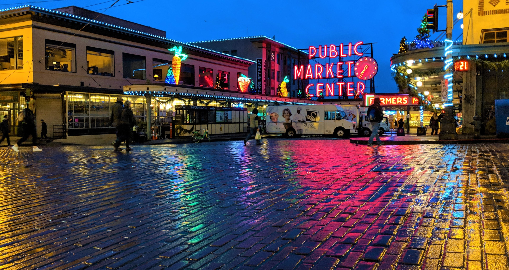
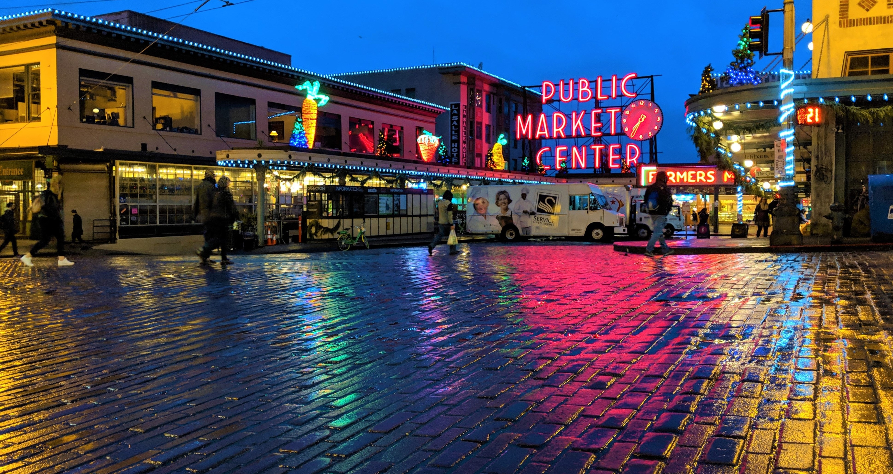

Chiangmai
Geographical Location: Tailand, Asia

Chiang Mai, in northern Thailand's lush hills, blends cultural richness with natural beauty. As the largest city and capital of its province, it's known as the "Rose of the North," offering an escape from urban life. Founded in 1296, Chiang Mai's rich history is visible in ancient temples like Wat Phra Singh and preserved city walls, showcasing a blend of past and present amidst stunning landscapes.

Chiang Mai, in northern Thailand's lush hills, blends cultural richness with natural beauty. As the largest city and capital of its province, it's known as the "Rose of the North," offering an escape from urban life. Founded in 1296, Chiang Mai's rich history is visible in ancient temples like Wat Phra Singh and preserved city walls, showcasing a blend of past and present amidst stunning landscapes.


Monteverde
Geographical Location: Costa Rica, South America

Monteverde, Costa Rica, renowned for its cloud forests, sits 4,662 feet above sea level. Here, fog creates a unique ecosystem visible through trails and hanging bridges, showcasing diverse wildlife and flora. The tourist hub, Santa Elena, offers restaurants, a serpentarium, and activities like hiking and ziplining in this stunning location.

Monteverde, Costa Rica, renowned for its cloud forests, sits 4,662 feet above sea level. Here, fog creates a unique ecosystem visible through trails and hanging bridges, showcasing diverse wildlife and flora. The tourist hub, Santa Elena, offers restaurants, a serpentarium, and activities like hiking and ziplining in this stunning location.


New York City
Geographical Location: New York, United States

New York City, a vibrant mix of cultures and experiences, buzzes with energy. Its streets, alive with the sounds and smells of diverse cuisines and street performers, mirror the city's diversity. With its iconic skyline and fast-paced life, NYC offers a unique blend of cultures and experiences, embodying an electrifying, ever-moving energy.

New York City, a vibrant mix of cultures and experiences, buzzes with energy. Its streets, alive with the sounds and smells of diverse cuisines and street performers, mirror the city's diversity. With its iconic skyline and fast-paced life, NYC offers a unique blend of cultures and experiences, embodying an electrifying, ever-moving energy.


Hangzhou
Geographical Location: China, Asia

Hangzhou, in eastern China, blends ancient heritage with natural beauty. Central to its charm is West Lake, a UNESCO site with tranquil waters, lush gardens, temples, and tea houses, inspiring artists for centuries. Famous for Longjing tea, the city offers traditional tea ceremonies and plantations. Hangzhou represents a harmony of tradition and modernity, encapsulating China's diverse cultural heritage.

Hangzhou, in eastern China, blends ancient heritage with natural beauty. Central to its charm is West Lake, a UNESCO site with tranquil waters, lush gardens, temples, and tea houses, inspiring artists for centuries. Famous for Longjing tea, the city offers traditional tea ceremonies and plantations. Hangzhou represents a harmony of tradition and modernity, encapsulating China's diverse cultural heritage.


Boston
Geographical Location: United States, North America

Boston, Massachusetts, rich in American history with landmarks like the Freedom Trail, is also a cultural and academic hub with institutions like Harvard and MIT. It boasts diverse neighborhoods, from Beacon Hill's cobblestones to the South End's trendy spots. With green spaces, a bustling waterfront, and famous seafood, Boston offers a unique mix of history, culture, and local charm.

Boston, Massachusetts, rich in American history with landmarks like the Freedom Trail, is also a cultural and academic hub with institutions like Harvard and MIT. It boasts diverse neighborhoods, from Beacon Hill's cobblestones to the South End's trendy spots. With green spaces, a bustling waterfront, and famous seafood, Boston offers a unique mix of history, culture, and local charm.


Seattle
Geographical Location: United States, North America

Seattle, in the Pacific Northwest, combines urban life with natural beauty, highlighted by the Space Needle's panoramic views. Known for its rich cultural and music scene, sustainability, and outdoor activities, it's also the birthplace of Starbucks. With diverse neighborhoods and bustling Pike Place Market, Seattle offers a blend of innovation, nature, and culture.

Seattle, in the Pacific Northwest, combines urban life with natural beauty, highlighted by the Space Needle's panoramic views. Known for its rich cultural and music scene, sustainability, and outdoor activities, it's also the birthplace of Starbucks. With diverse neighborhoods and bustling Pike Place Market, Seattle offers a blend of innovation, nature, and culture.
 
